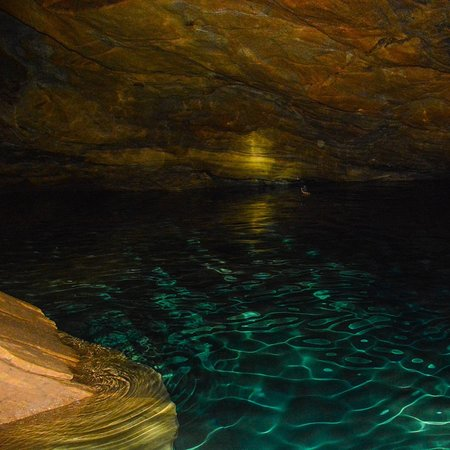

Nine Arches Bridge

The Nine Arch Bridge also called the Bridge in the Sky, is a viaduct bridge in Sri Lanka. It is one of the best examples of colonial-era railway construction in the country. The construction of the bridge is generally attributed to a local Ceylonese builder, P. K. Appuhami, in consultation with British engineers. The chief designer and project manager of the 'upcountry railway line of Ceylon' project was D. J. Wimalasurendra, a distinguished Ceylonese engineer and inventor. The designer of the viaduct was Harold Cuthbert Marwood of Railway Construction Department of Ceylon Government Railway. The 1923 report titled "Construction of a Concrete Railway Viaduct in Ceylon" published by the Engineering Association of Ceylon has details of all the records including the plans and drawings. It is located in Demodara, between Ella and Demodara railway stations. The surrounding area has seen a steady increase of tourism due to the bridge's architectural ingenuity and the profuse greenery in the nearby hillsides.
Rawana Falls

Ravana Falls is a popular sightseeing attraction in Sri Lanka. It currently ranks as one of the widest falls in the country.
Little Adam's Peak

Our second hike in Ella was to Little Adam`s Peak, which we did in between the two longer ones. We did this trip without a guide. It is a fairly easy hike and the path is marked by signs so it`s easy to find, and very popular among tourists! So expect to meet many other people from all over the world on this trip! On the two other more remote trips we did in Ella, we hardly met anybody, just some locals now and then. The Little Adam`s Peak got it`s named after it`s big brother, the holy mountain Adam`s Peak, because of the similar shape. Adam`s Peak is further west in Sri Lanka, close to Nuwara Eliya, and is 2243 m high and a much more exhausting and more challenging climb! The mountain has however three names; Adam`s Peak (this is where Adam first set foot on earth after being cast out of heaven), Sri Pada (Buddha`s footprint left by the Buddha as he headed towards paradise) and Samanalakande (Butterfly mountain, where butterflies go to die). We had plans of climbing Big Adam`s Peak, but Espen hurt his knee so we settled for the “little brother” instead. The path up the hill to Little Adam`s Peak is easy to find and is marked by signs showing the way next to the 98 Acres Resort, to the right of this white Buddha.
Nil Diya Pokuna
Nildiya Pokuna, located at a distance of 13.3 km from the Ella, is a great place to have an adventurous experience. Legend has it that King Rawana brought Sita from India and kept her in a very comfortable and very safe place. Many believe that the site is now a ruined underground palace complex filled with blue water. This is a very risky, well worth the trip. You too can have this experience as soon as possible, but do not ruin the place. Nil diya pokuna history: Legend has it that King Rawana brought Sita from India and kept her in a very comfortable and very safe place. Many believe that the site is now a ruined underground palace complex filled with blue water. Legend has it that King Rawana abducted Goddess Sita and hid in this cave. It is said that there were several tunnels under this rock which stretched for many miles. The tunnels from the Ravana Ella cave to the cold light of Nuwara Eliya near the Bogoda Rajamaha Viharaya and the Dowa Rajamaha Viharaya can still be seen today. It is also a memory that bears witness. In addition, it is believed that the tunnel was designed to reach several other areas hundreds of feet below the surface. Rumor has it that there is a throne and a crown in it. However, no further action was taken as the tunnels were closed under the protection of the Police Special Task Force.
Ellewala Waterfall

Ella wala waterfall is a amazing place in the Wellawaya area that you can have a natural bath.